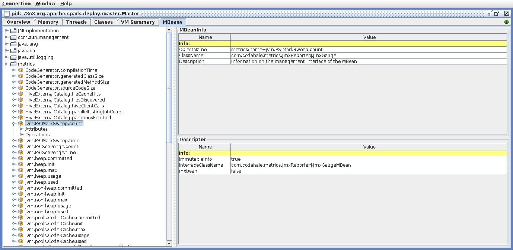
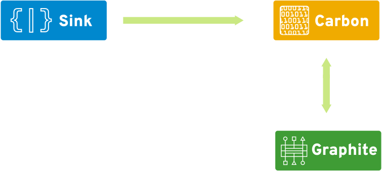
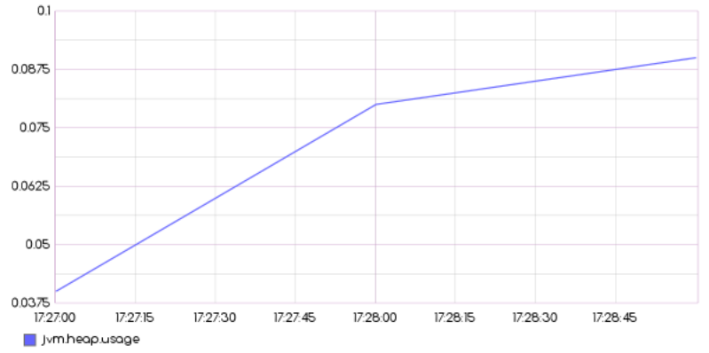

Why monitor Spark?
What about logs?
spark-submit --master=spark://cluster:7077 app.py
17/10/13 13:33:03 INFO BlockManager: BlockManager stopped
17/10/13 13:33:03 INFO BlockManagerMaster: BlockManagerMaster stopped
17/10/13 13:33:03 INFO OutputCommitCoordinator$OutputCommitCoordinatorEndpoint: OutputCommitCoordinator stopped!
17/10/13 13:33:03 INFO SparkContext: Successfully stopped SparkContext
10.0.1.113 - - [13/Oct/2017 13:33:04] "GET /sparkpi?scale=1000 HTTP/1.1" 200 -
Traceback (most recent call last):
File "/home/mike/workspace/github/radanalyticsio/tutorial-sparkpi-python-flask/app.py", line 41, in
app.run(host='0.0.0.0', port=port)
File "/home/mike/.venvs/sparkpi/lib/python2.7/site-packages/flask/app.py", line 841, in run
run_simple(host, port, self, **options)
File "/home/mike/.venvs/sparkpi/lib/python2.7/site-packages/werkzeug/serving.py", line 739, in run_simple
inner()
File "/home/mike/.venvs/sparkpi/lib/python2.7/site-packages/werkzeug/serving.py", line 702, in inner
srv.serve_forever()
File "/home/mike/.venvs/sparkpi/lib/python2.7/site-packages/werkzeug/serving.py", line 539, in serve_forever
HTTPServer.serve_forever(self)
File "/usr/lib64/python2.7/SocketServer.py", line 231, in serve_forever
poll_interval)
File "/usr/lib64/python2.7/SocketServer.py", line 150, in _eintr_retry
return func(*args)
File "/home/mike/opt/other-spark/python/lib/pyspark.zip/pyspark/context.py", line 236, in signal_handler
File "/home/mike/opt/other-spark/python/lib/pyspark.zip/pyspark/context.py", line 962, in cancelAllJobs
AttributeError: 'NoneType' object has no attribute 'sc'
17/10/13 13:37:30 INFO ShutdownHookManager: Shutdown hook called
17/10/13 13:37:30 INFO ShutdownHookManager: Deleting directory /tmp/spark-c9989888-5190-4d70-9d20-5960ede510e4/pyspark-3222b610-789c-49dd-876a-8baec96bb322
17/10/13 13:37:30 INFO ShutdownHookManager: Deleting directory /tmp/spark-c9989888-5190-4d70-9d20-5960ede510e4
Basic configuration
metrics.properties
master.source.jvm.class=org.apache.spark.metrics.source.JvmSource
worker.source.jvm.class=org.apache.spark.metrics.source.JvmSource
driver.source.jvm.class=org.apache.spark.metrics.source.JvmSource
executor.source.jvm.class=org.apache.spark.metrics.source.JvmSource
Metrics Servlet
GET /metrics/master/json/
{
"gauges": {
"jvm.PS-MarkSweep.count": {
"value": 1
},
"jvm.PS-MarkSweep.time": {
"value": 21
},
"jvm.PS-Scavenge.count": {
"value": 3
},
"jvm.PS-Scavenge.time": {
"value": 18
},
"jvm.heap.committed": {
"value": 235405312
Metrics Servlet
GET /metrics/applications/json/
GET /metrics/json/
Console Sink
metrics.properties
*.sink.console.class=org.apache.spark.metrics.sink.ConsoleSink
*.sink.console.period=5
*.sink.console.unit=seconds
Console Sink
10/12/17 4:59:54 PM ============================================================
-- Gauges ----------------------------------------------------------------------
jvm.PS-MarkSweep.count
value = 1
jvm.PS-MarkSweep.time
value = 23
jvm.PS-Scavenge.count
value = 4
jvm.PS-Scavenge.time
value = 31
jvm.heap.committed
value = 198705152
jvm.heap.init
value = 253755392
jvm.heap.max
value = 954728448
jvm.heap.usage
Console Sink
Slf4j Sink
metrics.properties
*.sink.slf4j.class=org.apache.spark.metrics.sink.Slf4jSink
*.sink.slf4j.period=5
*.sink.slf4j.unit=seconds
Slf4j Sink
17/10/14 11:47:22 INFO Master: I have been elected leader! New state: ALIVE
17/10/14 11:47:25 INFO metrics: type=GAUGE, name=jvm.PS-MarkSweep.count, value=1
17/10/14 11:47:25 INFO metrics: type=COUNTER, name=HiveExternalCatalog.fileCacheHits, count=0
17/10/14 11:47:25 INFO metrics: type=GAUGE, name=jvm.PS-MarkSweep.time, value=20
17/10/14 11:47:25 INFO metrics: type=COUNTER, name=HiveExternalCatalog.filesDiscovered, count=0
17/10/14 11:47:25 INFO metrics: type=GAUGE, name=jvm.PS-Scavenge.count, value=3
17/10/14 11:47:25 INFO metrics: type=COUNTER, name=HiveExternalCatalog.hiveClientCalls, count=0
17/10/14 11:47:25 INFO metrics: type=GAUGE, name=jvm.PS-Scavenge.time, value=17
17/10/14 11:47:25 INFO metrics: type=COUNTER, name=HiveExternalCatalog.parallelListingJobCount, count=0
17/10/14 11:47:25 INFO metrics: type=COUNTER, name=HiveExternalCatalog.partitionsFetched, count=0
17/10/14 11:47:25 INFO metrics: type=GAUGE, name=jvm.heap.committed, value=171442176
17/10/14 11:47:25 INFO metrics: type=GAUGE, name=jvm.heap.init, value=253755392
17/10/14 11:47:25 INFO metrics: type=GAUGE, name=jvm.heap.max, value=954728448
17/10/14 11:47:25 INFO metrics: type=GAUGE, name=jvm.heap.usage, value=0.04117022393366454
17/10/14 11:47:25 INFO metrics: type=GAUGE, name=jvm.heap.used, value=39306384
17/10/14 11:47:25 INFO metrics: type=GAUGE, name=jvm.non-heap.committed, value=34996224
17/10/14 11:47:25 INFO metrics: type=GAUGE, name=jvm.non-heap.init, value=2555904
17/10/14 11:47:25 INFO metrics: type=GAUGE, name=jvm.non-heap.max, value=-1
17/10/14 11:47:25 INFO metrics: type=GAUGE, name=jvm.non-heap.usage, value=-3.4380496E7
17/10/14 11:47:25 INFO metrics: type=HISTOGRAM, name=CodeGenerator.compilationTime, count=0, min=0, max=0, mean=0.0, stddev=0.0, median=0.0, p75=0.0, p95=0.0, p98=0.0, p99=0.0, p999=0.0
17/10/14 11:47:25 INFO metrics: type=GAUGE, name=jvm.non-heap.used, value=34381136
17/10/14 11:47:25 INFO metrics: type=HISTOGRAM, name=CodeGenerator.generatedClassSize, count=0, min=0, max=0, mean=0.0, stddev=0.0, median=0.0, p75=0.0, p95=0.0, p98=0.0, p99=0.0, p999=0.0
17/10/14 11:47:25 INFO metrics: type=GAUGE, name=jvm.pools.Code-Cache.committed, value=5111808
17/10/14 11:47:25 INFO metrics: type=HISTOGRAM, name=CodeGenerator.generatedMethodSize, count=0, min=0, max=0, mean=0.0, stddev=0.0, median=0.0, p75=0.0, p95=0.0, p98=0.0, p99=0.0, p999=0.0
17/10/14 11:47:25 INFO metrics: type=GAUGE, name=jvm.pools.Code-Cache.init, value=2555904
17/10/14 11:47:25 INFO metrics: type=HISTOGRAM, name=CodeGenerator.sourceCodeSize, count=0, min=0, max=0, mean=0.0, stddev=0.0, median=0.0, p75=0.0, p95=0.0, p98=0.0, p99=0.0, p999=0.0
17/10/14 11:47:25 INFO metrics: type=GAUGE, name=jvm.pools.Code-Cache.max, value=251658240
17/10/14 11:47:25 INFO metrics: type=GAUGE, name=jvm.pools.Code-Cache.usage, value=0.019977823893229166
Csv Sink
metrics.properties
*.sink.csv.class=org.apache.spark.metrics.sink.CsvSink
*.sink.csv.period=1
*.sink.csv.unit=seconds
*.sink.csv.directory=/tmp/spark/csv/master/
Csv Sink
[mike@opb-ultra] /tmp/spark/csv/master
$ ls
application.PythonPi.1507910958999.cores.csv
application.PythonPi.1507910958999.runtime_ms.csv
application.PythonPi.1507910958999.status.csv
CodeGenerator.compilationTime.csv
CodeGenerator.generatedClassSize.csv
CodeGenerator.generatedMethodSize.csv
CodeGenerator.sourceCodeSize.csv
HiveExternalCatalog.fileCacheHits.csv
HiveExternalCatalog.filesDiscovered.csv
HiveExternalCatalog.hiveClientCalls.csv
HiveExternalCatalog.parallelListingJobCount.csv
HiveExternalCatalog.partitionsFetched.csv
jvm.heap.committed.csv
jvm.heap.init.csv
jvm.heap.max.csv
jvm.heap.usage.csv
jvm.heap.used.csv
jvm.non-heap.committed.csv
Csv Sink
jvm.PS-MarkSweep.count.csv
t,value
1507910949,1
1507910950,1
1507910951,1
1507910952,1
1507910953,1
1507910954,1
1507910955,1
1507910956,1
1507910957,1
1507910958,1
1507910959,1
1507910960,1
1507910961,1
1507910962,1
1507910963,1
1507910964,1
JMX Sink
metrics.properties
*.sink.jmx.class=org.apache.spark.metrics.sink.JmxSink
spark-defaults.conf
spark.driver.extraJavaOptions \
-Dcom.sun.management.jmxremote
-Dcom.sun.management.jmxremote.authenticate=false
-Dcom.sun.management.jmxremote.ssl=false
-Dcom.sun.management.jmxremote.port=19150
-Dcom.sun.management.jmxremote.local.only=false
-Djava.rmi.server.hostname=127.0.0.1
-Dcom.sun.management.jmxremote.rmi.port=19151
JMX Sink
jconsole

JMX Sink
Jolokia Java Agent
spark-class -javaagent:jolokia-jvm-agent.jar=port=19150,host=127.0.0.1
JMX Sink
GET /jolokia/
{
"request": {
"type": "version"
},
"status": 200,
"timestamp": 1507946690,
"value": {
"agent": "1.3.7",
"config": {
"agentContext": "/jolokia",
"agentId": "10.0.1.113-7868-4926097b-jvm",
"agentType": "jvm",
"debug": "false",
"debugMaxEntries": "100",
"discoveryEnabled": "true",
"historyMaxEntries": "10",
"maxCollectionSize": "0",
"maxDepth": "15",
"maxObjects": "0"
},
"info": {
"product": "jetty",
"vendor": "Mortbay",
"version": "6.1.26"
},
"protocol": "7.2"
}
}
JMX Sink
GET /jolokia/read/metrics:name=jvm.PS-MarkSweep.count
{
"request": {
"mbean": "metrics:name=jvm.PS-MarkSweep.count",
"type": "read"
},
"status": 200,
"timestamp": 1507946213,
"value": {
"Value": 1
}
}
Graphite Sink
metrics.properties
*.sink.graphite.class=org.apache.spark.metrics.sink.GraphiteSink
*.sink.graphite.host=127.0.0.1
*.sink.graphite.port=2003
*.sink.graphite.period=1
*.sink.graphite.unit=seconds
Graphite Sink
Graphite Sink
/render?target=jvm.heap.usage&from=-3minutes

Graphite Sink
/metrics/index.json
[
"jvm.PS-MarkSweep.count",
"jvm.PS-MarkSweep.time",
"jvm.PS-Scavenge.count",
"jvm.PS-Scavenge.time",
"jvm.heap.committed",
"jvm.heap.init",
"jvm.heap.max",
"jvm.heap.usage",
"jvm.heap.used",
"jvm.non-heap.committed",
"jvm.non-heap.init",
"jvm.non-heap.max",
"jvm.non-heap.usage",
"jvm.non-heap.used",
"jvm.pools.Code-Cache.committed",
Graphite Sink
/render?target=jvm.PS-MarkSweep.count&format=json
[
{
"datapoints": [
[
null,
1507947840
],
[
1.0,
1507947900
],
[
1.0,
1507947960
]
],
"target": "jvm.PS-MarkSweep.count"
}
]
Much more to discover
app-*-*.driver.BlockManager.memory.*
app-*-*.driver.CodeGenerator.compilationTime.*
app-*-*.driver.CodeGenerator.generatedClassSize.*
app-*-*.driver.CodeGenerator.generatedMethodSize.*
app-*-*.driver.CodeGenerator.sourceCodeSize.*
app-*-*.driver.DAGScheduler.job.*
app-*-*.driver.DAGScheduler.messageProcessingTime.*
app-*-*.driver.DAGScheduler.stage.*
application.PythonPi.*.cores
application.PythonPi.*.runtime_ms
jvm.total.committed
jvm.total.init
jvm.total.max
jvm.total.used
worker.coresFree
worker.coresUsed
worker.executors
worker.memFree_MB

Scraping
- rhuss/jolokia
- prometheus/jmx_exporter
- fabric8io/agent-bond
Broadcast
- erikerlandson/spark-kafka-sink
Hybrid
- radanalyticsio/scorpion-stare